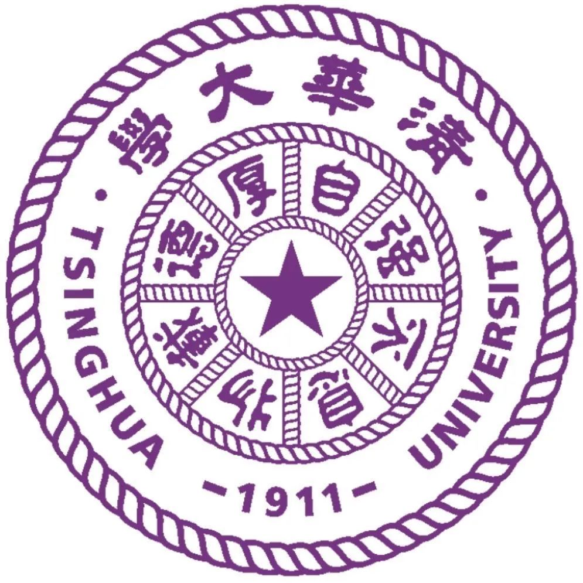

|
HUANG Tin Yeh (Heaven)
|
|
The Hong Kong Polytechnic University
Faculty of Engineering, Department of Industrial and Systems Engineering
BEng (Hons) Scheme in Product and Industrial Engineering
Research Centre for Data Sciences & Artificial Intelligence (RC-DSAI)
Student Research Intern, PolySmart Research Group
Tsinghua University Shenzhen - X-Institute
Joint Training: Social Innovation
E-mail: tin-yeh.huang@connect.polyu.hk
E-mail: huangtianye@mails.x-institute.edu.cn
Website: huangty5121.github.io
Phone: +852 94498934 / +86 19896555044
Address: Department of Industrial and Systems Engineering, Faculty of Engineering, The Hong Kong Polytechnic University, Hong Kong SAR, China, 999077
|
The name "Tin Yeh" (天野) signifies the boundless sky and vast wilderness.
The sky is endless, the wilderness infinite.
Between heaven and earth lies the realm of human existence. — The Dao of Three Powers
I look up to the stars, contemplating the unknown and the future; I look down to the fields, embracing responsibility for the present and society.
I walk between Heaven (the void of science) and Earth (the expanse of society), questioning the meaning of life through reflection, and seeking the possibilities of the future through exploration.
In the space between the void and reality, I question, explore, and act, writing the unfinished chapter of my life.
Education
B.Eng. (Hons) Scheme in Product and Industrial Engineering (Sep. 2024 – Aug. 2028)
Department of Industrial and Systems Engineering, The Hong Kong Polytechnic University
Major Courses: Product Engineering and Design, Programming for Scientist and Engineer, Engineering Economics, Engineering Management, University Physics, Advanced Mathematics, Materials Science and Engineering, Engineering Drawing, Computer-Aided Design and Engineering, Engineering Laws and Ethics Position: Student Research Intern, RC-DSAI (Oct. 2024 – Now); Student Representative (2024/2025 Sem 1 & 2)
Joint Training: Social Innovation (Sep. 2024 – Aug. 2028)
 X-Institute, Tsinghua SIGS & TEEP, Shenzhen, China
Supervisor: Dr. Tang Ming (Former Counselor of the State Council, China) Collaborate: ByteDance Ltd., Accenture Co. Ltd.
Associate in Statistics and Data Science (Sep. 2023 – Aug. 2024)
Hong Kong Community College, The Hong Kong Polytechnic University
Hong Kong Diploma of Secondary Education Examination (HKDSE) (Sep. 2018 – Aug. 2023)
Pui Kiu College, Hong Kong SAR, China
Exchange Study Experience
Semester Exchange (2025/2026 Semester 1), Tsinghua University (Sep. 2025 – Jan. 2026) Social Innovation Training, Shenzhen X-Institute · ByteDance Ltd. · Accenture Co. Ltd. (Jan. 2025) AI Winter School 2025, Center for the Fundamental Physics of the Universe · Department of Physics, Brown University (Jan. 2025) Intelligent Car Human-machine Shared Control Exchange Project, Northeastern University · The Hong Kong Polytechnic University, 2024 Teacher and Student Exchange Plan between Mainland Universities and Universities in Hong Kong and Macao (Dec. 2024)
Position
Member - Membership of District Youth Development and Civic Education Committee, HAD, HKSAR Government (Apr. 2025 – Now) AI Agent R&D Part-time - Apricot AI Ltd., HKSAR (Mar. 2025 – Now) Assistant to the President (Management and Technical Director) - Hong Kong MBA Institute, HKSAR, China (Feb. 2025 – Now) Online AI Product & Algorithm R&D Intern - Qingbei Intelligent Technology Co., Ltd., China (Feb. 2025 – Now) Shareholder and AI Algorithm Engineer and Greater Bay Area Strategy Consultant - Ongoing Start-up Enterprise Projects (AI4Goods), China (Confidentiality) (Jan. 2025 – Now) Student Research Intern - PolySmart, Research Centre – Data Science & AI, PolyU, HKSAR, China (Oct. 2024 – Now) PolyVentures Student Assistant - Knowledge Transfer and Entrepreneurship Office, PolyU, HKSAR (Oct. 2024 – Now) Student Assistant - Division of Science, Engineering and Health Studies, CPCE, PolyU, HKSAR, China (Mar. 2024 – Apr. 2025) Trainee (Department of Accounting & Information Technology) - Royal Plaza Hotel, HKSAR, China (Dec. 2023 – Apr. 2024)
Research Interests
Cognitive Emergence Life Emergence Computational World Neural Network Collective Intelligence (CI) Social Network Analysis (SNA) Machine & Deep Learning Multi-Agent Systems (MAS) Spatial & Ecological Data Science Bio-heuristic Algorithms Agent-Based Modelling (ABM) Operations Research
Publications
Wang, X.*, Wang, Y.+, Huang, T. Y.+ (2025). Crypto-ncRNA: Encryption Algorithm Based on Non-Coding RNA (ncRNA). ICLR 2025 Workshop on AI for Nucleic Acids. https://openreview.net/forum?id=j6ODUDw4vN Wang, Y.*, Wang, J., Huang, T. Y., Yang, J., Yang, G., Xu, Z. (2025). STGCN-LSTM for Olympic Medal Prediction: Dynamic Power Modelling and Causal Policy Optimization. arXiv preprint arXiv:2501.17711.
* refers to First Author; + refers to Co-First Author
Projects
Emergent Intelligent Hardware Systems Based on Coupled Synaptic Devices (Huang, T. Y.*) (Sep. 2025 – Sep. 2026)
- PolyU URIS (Undergraduate Research and Innovation Scheme) Project; Supervisor: Prof. Han Suting (ABCT)
Biological digital watermarking: extracting protein skeleton-based on Matif algorithm (Wang, X.*, Jiang, Z., Wang, Y, Huang, T. Y.) (Apr. 2025 – Now) SMA-ToT: Multi-Path Reasoning Optimization Method Based on Bio-heuristic Algorithms (Huang, T. Y.*) (Mar. 2025 – Now) Multi-Modal BERT for Health Crisis Early Warning with Population Analysis (Huang, T. Y.*) (Feb. 2025 – Now) "One Young Supporting One Elderly": Leveraging AI Digital Twin Technology to Alleviate Emotional Companionship Challenges for the Elderly (Huang, T. Y.*) (Dec. 2024 – Now)
- X-Institute Enhanced Student Research Training (ESRT) Project; Supervisor: Dr. Tang Ming; collaborating with: ByteDance Ltd. & Accenture Co. Ltd.
The Application of Multi-modal BERT Model in Extraction and Analysis of Global Heat Wave Disaster Adaptability Factors (Wang, Y.*, Huang, T. Y.+) (Oct. 2024 – Now)
- Project of Innovative Practice Training Program for College Students, Chinese Academic of Sciences; Supervisor: Prof. Yong Ge
Machine Learning with Multi-stage Production Process Decision-making and Cost Optimization Based on Sampling Inspection (Wang, Y.*, Huang, T. Y.+) (Oct. 2024 – Now)
* refers to First Author; + refers to Co-First Author
Research Study
X-Challenge 2024: Interdisciplinary Cutting-edge Disruptive Innovation Challenge, Tsinghua TEEP & X-Institute (Jul. 2024 – Aug. 2024)
- Track 9: How to cultivate innovative talents and promote social equity on a large scale in the era of artificial intelligence?
- Supervisor: Dr. Tang Ming (Former Counselor of the State Council, China) · Dr. Zuo Xiaolei (Chief Economist with China Galaxy Securities) · Dr. Huang Licheng (Director of Marketing Department (Carrier Business Group), Huawei Technologies Latin America Region) · Mr. Wang Mingsheng (Researcher, X-Institute)
- Developed the plan of addressing resource misalignment by integrating AI model and data analysis method.
- Represented the research group of Track 9 at X-Fusion Global Innovators Summit 2024.
- Keywords: Social Innovation; Project-based Learning; Large Language Model; Personalized recommendation
X-Idea 2023: X-Institute International Summer School, Tsinghua TEEP & X-Institute (Jul. 2023 – Aug. 2023)
- Track 6: Building Extraterrestrial Ecosystems: From Microbes to Human (The Most Challenging Award)
- Supervisor: Prof. Jeff Gore (Professor, Department of Physics, Massachusetts Institute of Technology) · Prof. Juan Keymer (Associated Faculty, Department of Natural Sciences and Technology, University of Aysén · Assistant Professor, Institute for Advanced Studies, X-Institute) · Dr. Janneke Noorlag (Researcher & Lab Manager, Department of Natural Sciences and Technology, University of Aysén · Supporter, Institute for Advanced Studies, X-Institute) · Prof. Jiliang Hu (Assistant Professor, Tsinghua university) · Dr. Mo Han (BGI Genomics Researcher)
- Modelled ecological interactions using the Lotka-Volterra Model for simulations the chaos and fractals.
- Designed a portable and machine-learning based microbial rapid substance measured system.
- Designed a microbial neural network by exploring the potential with island biogeography and controllable microbial neurons.
- Keywords: Microbiology; Population Dynamic; Ecology; Machine Learning
Other Experience
Master of Ceremonies - Luncheon celebrating the 75th National Day of the People's Republic of China and the 27th anniversary of Hong Kong reunification, HKFTU (Oct. 2024) Student Representative - B.Eng. (Hons) Product and Industrial Engineering, Department of Industrial and Systems Engineering, PolyU (Feb. 2025 – Now) Student Representative - Associate in Statistics and Data Science, Division of Science, Engineering, and Health Studies (SEHS), CPCE, PolyU (Oct. 2024) Student Member - The Hong Kong Institution of Engineers (Nov. 2024 - Aug. 2028) Student Ambassador - CPCE, PolyU (Oct. 2023 - Oct. 2024)
Achievements
Scholarship - PolyU ISE Entry Scholarship for Non-JUPAS Admissions (Oct. 2024) Scholarship - PolyU CPCE Study Visit Programme Scholarship (Jun. 2024) Award - The Most Academic Award, Research Award, X-Institute (Jul. 2023) Award - Best Mentee Award, PolyU Mentorship Program (Jul. 2023) Certification - Microsoft Certification: Azure AI Fundamentals (Dec. 2021) Certification - The Hong Kong Polytechnic University Mathematics Gifted Programme, Advanced Level (Dec. 2021) Award - Third Place in Senior High School Putonghua Poetry Recitation, 73rd Hong Kong Schools Speech Festival (Jan. 2021)
Skills & Interests
Language Skills: Cantonese (Native), Mandarin (Native), English (Proficient)
Technical Skills: Proficient in Python, C/C++, MATLAB, MySQL, CAD (SolidWorks), SAS, R, MS Office, Colab, etc…
Interests: Arts, Design, Music, Cycling, Social Science, Philosophy, Humanities, Chinese Literature
Last updated:
CV Download: English.
|